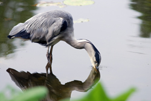
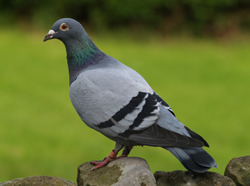

We Are Utah Backyard Birds
Welcome to Backyard Birds of Utah! If you love birdwatching like we do, you should enjoy looking around this site. Take a look at our Bird Profiles and take the opportunity to complete our survey.
Gallery




Heron Drinking From Pond
Tributes

My name is Dave Jorgensen. I live in northern Utah and I enjoy bird watching. Every year I look forward to finding a nature calendar to put in my office. Because I work in the city, I enjoy being reminded about the beauty of the state of Utah.
Thanks for brightening up my workplace,
David Jorgensen